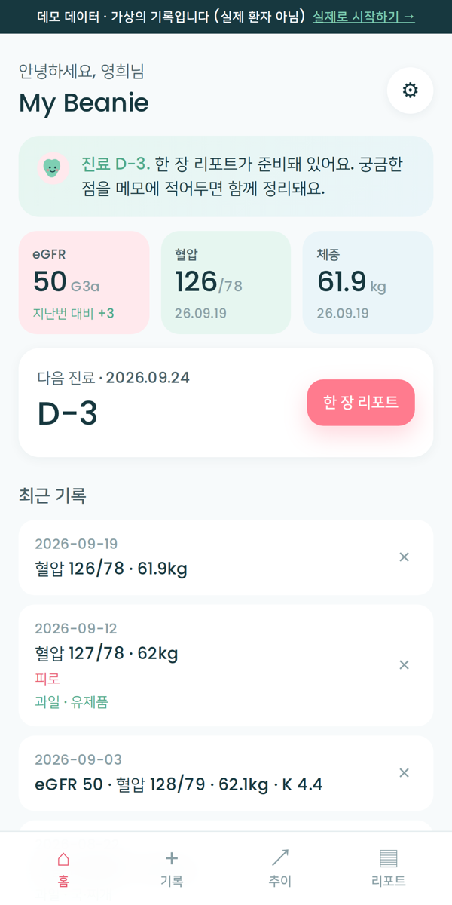

My Beanie의 두 축은 환자의 자기관리와 보호자 미러링입니다. 식사를 준비하는 사람과 기록하는 사람이 같은 것을 보되, 무엇을 보여줄지는 환자가 정합니다. 감시가 아니라 동행이 되도록.
서버도 계정도 없습니다. 환자가 보낸 링크 자체가 열쇠입니다.
앱의 리포트 화면에서 보여줄 항목을 체크합니다 — eGFR·검사 수치, 혈압, 체중, 몸의 신호, 식사 패턴, 의사에게 물어볼 것, 이름 표시 여부. 기간(30·90일)과 범위(최근 값만·추이 포함)도 고릅니다.
"미러 카드 보내기"를 누르면 고른 항목만 담긴 링크가 만들어져 카카오톡·문자로 보낼 수 있습니다. 체크하지 않은 항목은 링크 안에 들어가지 않습니다.
가족은 휴대폰 앱이나 이 페이지에서 링크를 엽니다. 읽기 전용이고, 저장해 두면 다음에도 볼 수 있습니다. 새 링크를 받으면 갱신됩니다.
왼쪽은 환자가 매일 쓰는 앱, 오른쪽은 그 환자가 "eGFR·혈압·식사 패턴·질문"만 골라 보낸 미러 카드입니다. 가상의 데모 데이터예요.

체중·몸의 신호는 이 환자가 체크하지 않아 카드에 없습니다. 링크 안에도 없습니다.
가족에게서 받은 링크를 아래에 붙여넣거나, 링크를 그대로 눌러 이 페이지로 오면 자동으로 열립니다. 컴퓨터가 편한 분을 위한 큰 화면 뷰어예요.
"이 브라우저에 저장"을 누른 카드는 이 컴퓨터에만 남습니다. 어머니·아버지처럼 여러 분의 카드를 나란히 둘 수 있어요.
서버와 계정이 생기면 환자가 "OO에게 계속 공유"를 켜두는 것만으로 가족 화면이 자동으로 갱신됩니다. 항목 선택은 지금과 똑같이 환자가 하고, 언제든 끌 수 있습니다. 개인정보 동의 화면과 함께 도입합니다.